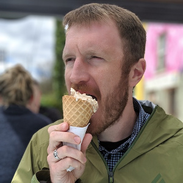

A lot of different people help make our Carpentries community at UGA.
IOB Outreach Committee
Currently, most of the Carpentries work at UGA is carried out by the Institute of Bioinformatics Outreach Committee:
 Jason Wallace (Crop & Soil Science) |
 Shannon Quinn (Computer Science) |
 Holly Bik (Marine Science/IOB) |
 Casey Bergman (Genetics/IOB) |
|---|---|---|---|
Badged Instructors
The following people are the known badged Carpentries instructors at UGA. If you notice someone missing, please let us know.
| Name | Department | Role |
|---|---|---|
| Bergman, Casey | Genetics, Bioinformatics | Faculty |
| Bik, Holly | Marine Sciences, Bioinformatics | Faculty |
| Corut, Kivanc | Bioinformatics | Graduate Student |
| Francis, Michael | Bioinformatics | Graduate Student |
| Miller, Mark | Plant Breeding, Genetics, & Genomics | Graduate Student |
| Montenegro, Tito | Bioinformatics | Graduate Student |
| Quinn, Shannon | Computer Science | Faculty |
| Soleymani, Saber | Computer Science | Graduate Student |
| Tran, Dung (“Ivy”) | Plant Breeding, Genetics, & Genomics | Graduate Student |
| Wallace, Jason | Crop & Soil Science | Faculty |
| Wright, Hallie | Plant Breeding, Genetics, & Genomics | Graduate Student |
Alumni
The nature of a University is that people move on. Here are some of our past community members and where they have gone since
| Name | Department | Next Adventure |
|---|---|---|
| Kovar, Lynsey | Bioinformatics | Inari |
| Gimode, Davis | Plant Breeding, Genetics, & Genomics | ICRISAT - Kenya |
| Taitano, Nathan | Plant Breeding, Genetics, & Genomics | BASF |
| Vaughn, Justin | USDA-ARS | USDA-ARS Genomics and Bioinformatics Research Unit |